BUILT IN SILENCE.
DESIGNED FOR LEGACY.
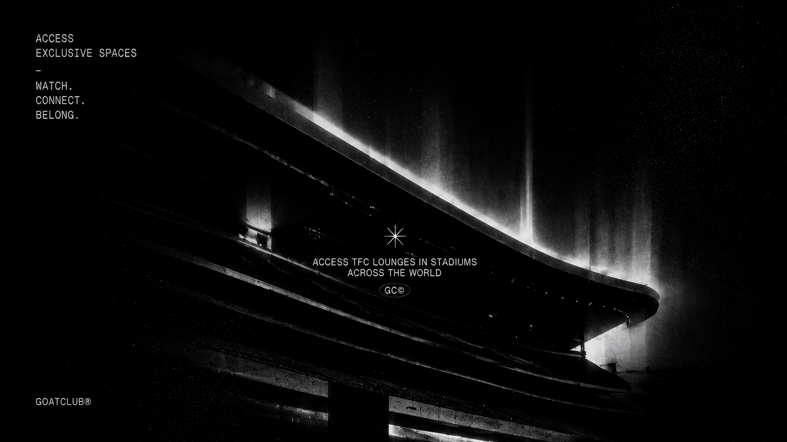
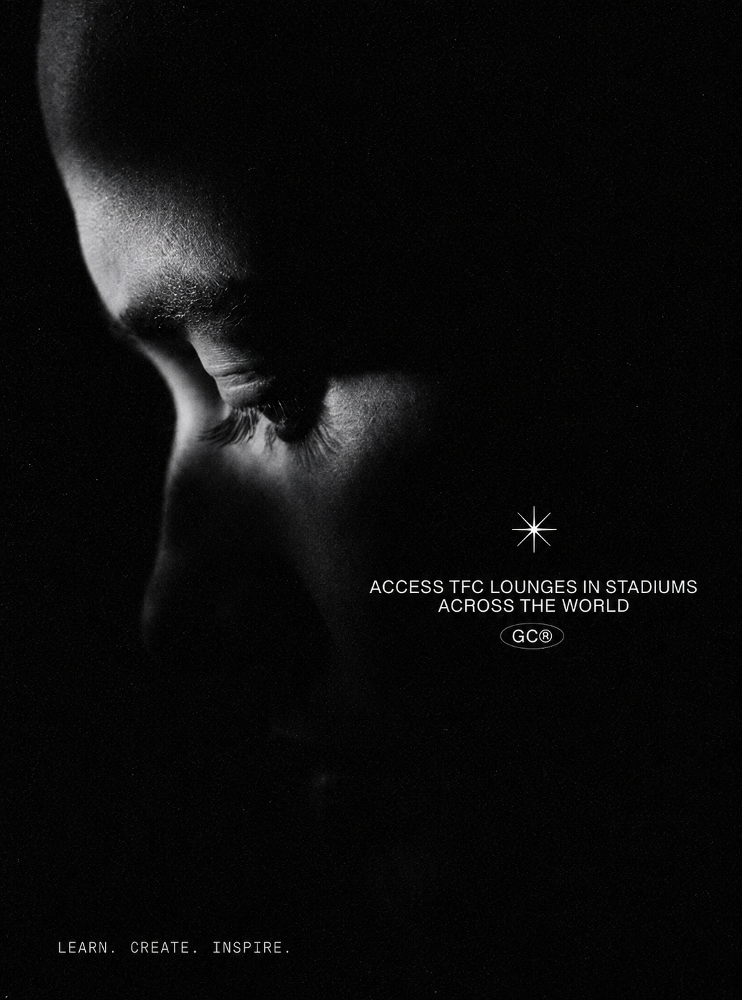
A cinematic editorial experience inspired by brutalist architecture, underground visual culture, monochrome campaigns and futuristic digital archives.
GLOBAL ACCESS
EXCLUSIVE EXPERIENCES
LASTING IMPACT
MADE WITH
INTENTION.
ACCESS TFC LOUNGES
ACROSS THE WORLD.
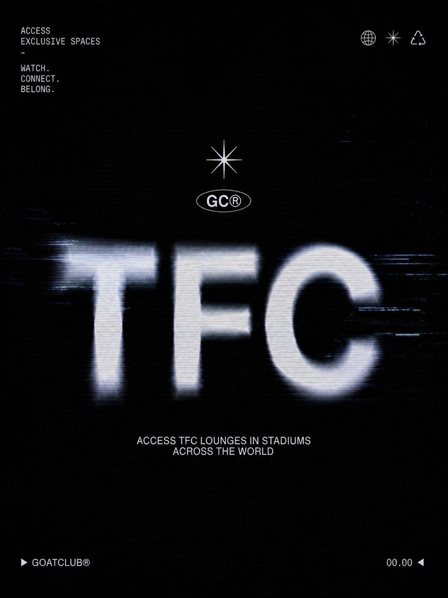
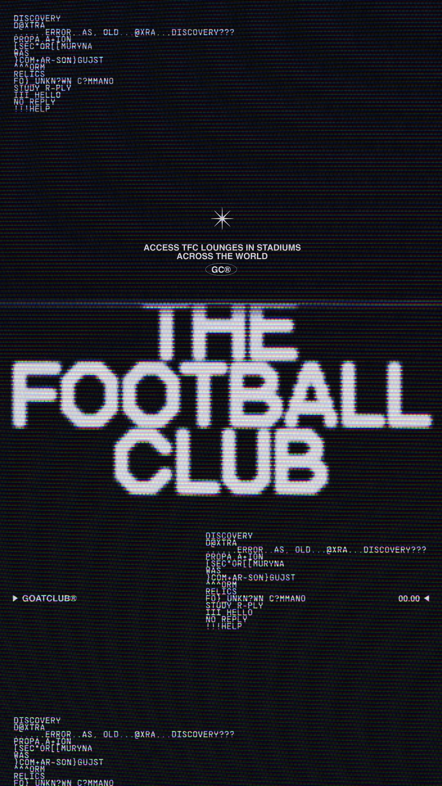
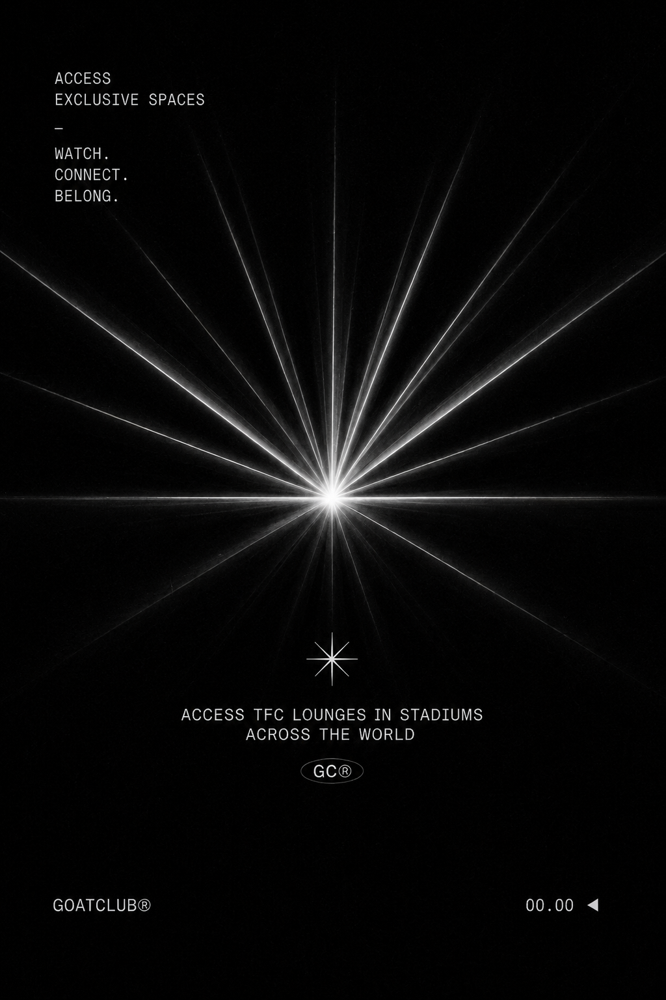
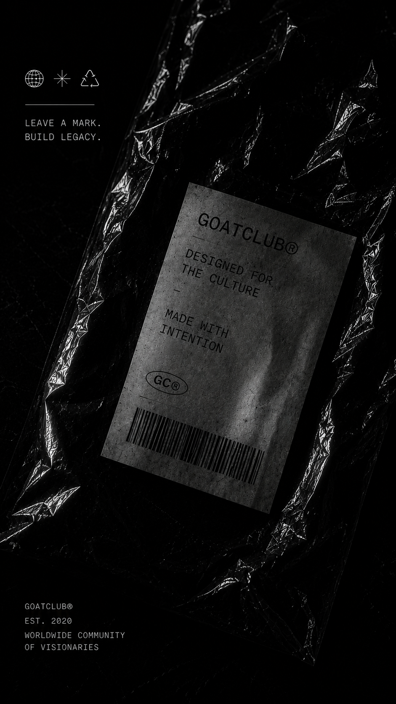
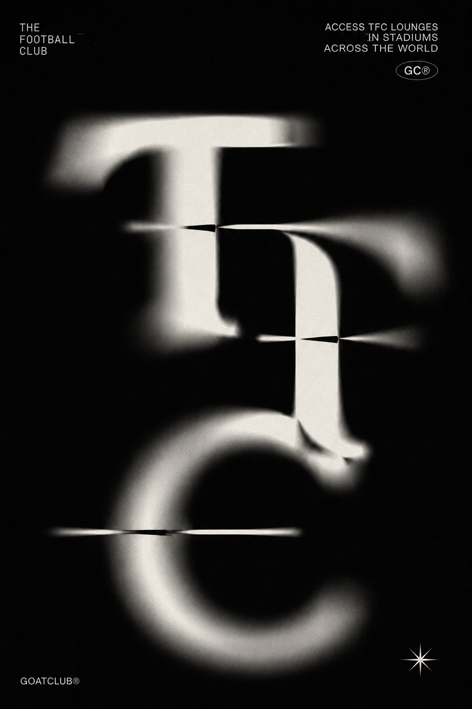
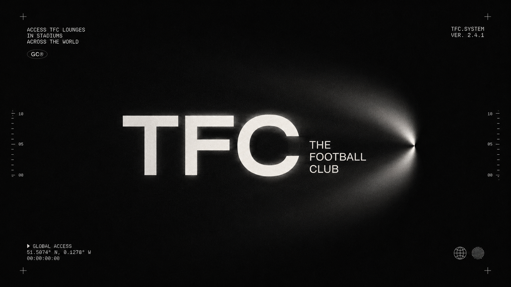
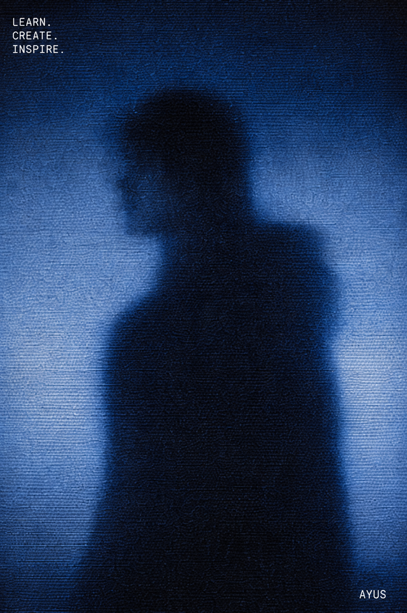
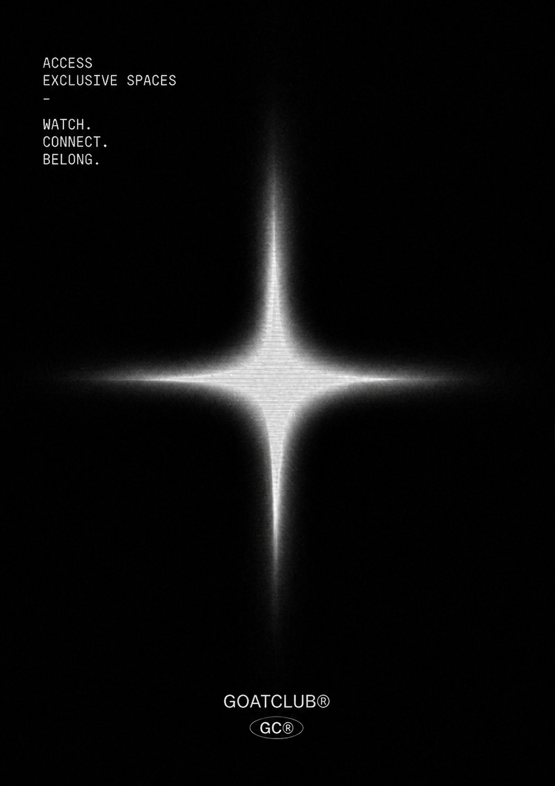
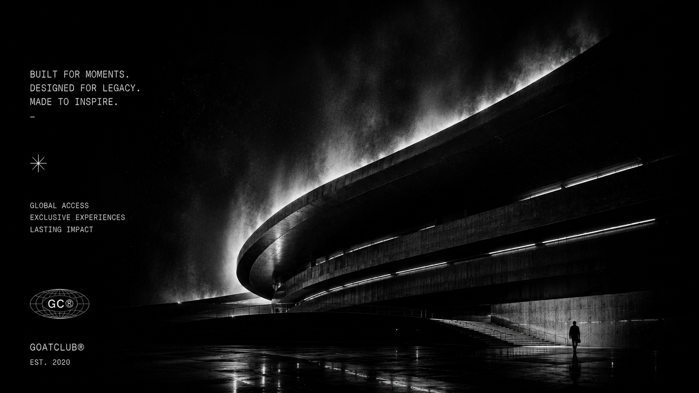
WATCH. CONNECT. BELONG.